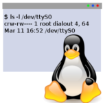
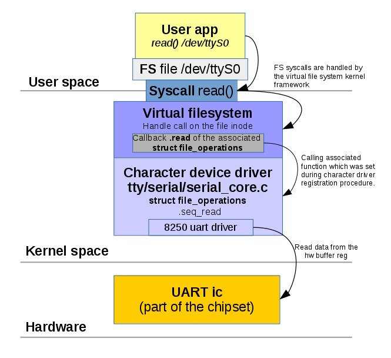

A character device is one of the simplest ways to communicate with a module in the Linux kernel.
These devices are presented as special files in a /dev directory and support direct reading and writing of any data, byte by byte, like a stream. Actually, most of the pseudo-devices in /dev are character devices: serial ports, modems, sound, and video adapters, keyboards, some custom I/O interfaces. Userspace programs can easily open, read, write, and custom control requests with such device files.
Here I am describing how to write a simple Linux kernel module which can create one or multiple character device.
Introducing to character devices.
Detection of the device type in /dev directory is pretty simple.
$ ls -l /dev/ttyS0 crw-rw---- 1 root dialout 4, 64 Mar 11 16:52 /dev/ttyS0
Symbol C, in the beginning, means that this device is a character device.
Also, you can find here two strange numbers: 4 and 64. This is a Major and Minor number of this device.
Inside the Linux kernel, every device is identified not by a symbolic name but by a unique number – the device’s major number. This number assigning by the kernel during device registration. Every device driver can support multiple “sub-devices”. For example, a serial port adapter may contain two hardware ports. Both of these ports are handled by the same driver, and they share one Major number. But inside this driver, each of these ports is also identified by the unique number, and this is a device Minor number.
crw-rw---- 1 root dialout 4, 64 Mar 11 16:52 /dev/ttyS0 crw-rw---- 1 root dialout 4, 65 Mar 11 16:52 /dev/ttyS1 crw-rw---- 1 root dialout 4, 66 Mar 11 16:52 /dev/ttyS2
One Major number 4 for every ttySX device and different (64–65) Minor numbers.
The driver’s code assigns minor numbers, and the developer of this driver may select any suitable values.
As this device acts like a file – programs can do almost everything except seeking. Every file operation on this object commands the driver to do something inside the Linux kernel and start reading some data from the hardware.
At the end of this article, you can find a complete example of the character device driver, but first, let’s discuss how it works.
The diagram below shows how the userspace program interacts with the IBM PC serial port using the character device.
The virtual filesystem is an abstraction layer on top of a more concrete file system. A VFS aims to allow client applications to access different types of concrete file systems uniformly.
{kind=link}
File operations
In special device files, VFS is responsible for calling I/O functions set by the device driver.
To set this function special kernel structure is used.
struct file_operations {
struct module *owner;
loff_t (*llseek) (struct file *, loff_t, int);
ssize_t (*read) (struct file *, char *, size_t, loff_t *);
ssize_t (*write) (struct file *, const char *, size_t, loff_t *);
int (*readdir) (struct file *, void *, filldir_t);
unsigned int (*poll) (struct file *, struct poll_table_struct *);
int (*ioctl) (struct inode *, struct file *, unsigned int, unsigned long);
int (*mmap) (struct file *, struct vm_area_struct *);
int (*open) (struct inode *, struct file *);
int (*flush) (struct file *);
int (*release) (struct inode *, struct file *);
int (*fsync) (struct file *, struct dentry *, int datasync);
int (*fasync) (int, struct file *, int);
int (*lock) (struct file *, int, struct file_lock *);
ssize_t (*readv) (struct file *, const struct iovec *, unsigned long,
loff_t *);
ssize_t (*writev) (struct file *, const struct iovec *, unsigned long,
loff_t *);
};
Some operations are not implemented by a driver. For example, a driver that handles a video card won’t need to read from a directory structure. The corresponding entries in the file_operations structure should be set to NULL.
In a C99 way, initialization is simple.
struct file_operations fops = {
.read = device_read,
.write = device_write,
.open = device_open,
.release = device_release
};
Initialized file_operations can be assigned to the character device during device registration.
Registration of the character device
The registration procedure consists of several simple steps.
First, you need to decide how many minor devices you need. This is a constant which typically depends on your hardware (if you are writing a driver for real hardware).
Minor numbers are convenient to use as part of the device name. For example,/dev/mychardev0 with a Minor 0 /dev/mychardev2 with a Minor 2.
The first step is an allocation and registration of the range of char device numbers using alloc_chrdev_region.
int alloc_chrdev_region(dev_t *dev, unsigned int firstminor, unsigned int count, char *name);
Where dev is output parameter for first assigned number, baseminor is first of the requested range of minor numbers (e.g., 0), count is a number of minor numbers required, and name – the associated device’s name driver.
The major number will be chosen dynamically and returned (along with the first minor number) in dev.
The function returns zero or a negative error code.
To get generated Major number, we can use MAJOR() macros.
int dev_major = MAJOR(dev);
Now it’s time to initialize a new character device and set file_operations with cdev_init.
void cdev_init(struct cdev *cdev, const struct file_operations *fops);
struct cdev represents a character device and is allocated by this function.
Now add the device to the system.
int cdev_add(struct cdev *p, dev_t dev, unsigned count);
Finally – create a device file node and register it with sysfs.
struct device * device_create(struct class *class, struct device *parent, dev_t devt, const char *fmt, ...);
Now all together.
This code creates 2 character devices with names /dev/mychardev0 and /dev/mychardev1
#include <linux/cdev.h>
#include <linux/device.h>
#include <linux/kernel.h>
#include <linux/fs.h>
// max Minor devices
#define MAX_DEV 2
// initialize file_operations
static const struct file_operations mychardev_fops = {
.owner = THIS_MODULE,
.open = mychardev_open,
.release = mychardev_release,
.unlocked_ioctl = mychardev_ioctl,
.read = mychardev_read,
.write = mychardev_write
};
// device data holder, this structure may be extended to hold additional data
struct mychar_device_data {
struct cdev cdev;
};
// global storage for device Major number
static int dev_major = 0;
// sysfs class structure
static struct class *mychardev_class = NULL;
// array of mychar_device_data for
static struct mychar_device_data mychardev_data[MAX_DEV];
void mychardev_init(void)
{
int err, i;
dev_t dev;
// allocate chardev region and assign Major number
err = alloc_chrdev_region(&dev, 0, MAX_DEV, "mychardev");
dev_major = MAJOR(dev);
// create sysfs class
mychardev_class = class_create(THIS_MODULE, "mychardev");
// Create necessary number of the devices
for (i = 0; i < MAX_DEV; i++) {
// init new device
cdev_init(&mychardev_data[i].cdev, &mychardev_fops);
mychardev_data[i].cdev.owner = THIS_MODULE;
// add device to the system where "i" is a Minor number of the new device
cdev_add(&mychardev_data[i].cdev, MKDEV(dev_major, i), 1);
// create device node /dev/mychardev-x where "x" is "i", equal to the Minor number
device_create(mychardev_class, NULL, MKDEV(dev_major, i), NULL, "mychardev-%d", i);
}
}
You can find a few new things in this example. The creation of the sysfs class is a necessary part of the device node creation.
Function class_create(THIS_MODULE, “mychardev”) creates sysfs class with paths for each character devices:
$ tree /sys/devices/virtual/mychardev/
/sys/devices/virtual/mychardev/
├── mychardev-0
│ ├── dev
│ ├── power
│ │ ├── async
│ │ ├── autosuspend_delay_ms
│ │ ├── control
│ │ ├── runtime_active_kids
│ │ ├── runtime_active_time
│ │ ├── runtime_enabled
│ │ ├── runtime_status
│ │ ├── runtime_suspended_time
│ │ └── runtime_usage
│ ├── subsystem -> ../../../../class/mychardev
│ └── uevent
└── mychardev-1
├── dev
├── power
│ ├── async
│ ├── autosuspend_delay_ms
│ ├── control
│ ├── runtime_active_kids
│ ├── runtime_active_time
│ ├── runtime_enabled
│ ├── runtime_status
│ ├── runtime_suspended_time
│ └── runtime_usage
├── subsystem -> ../../../../class/mychardev
└── uevent
Sysfs can be used as an additional way to interact with userspace. Setting up some driver params, for example.
Another useful thing – configure UDEV variables to set up correct permissions to the character device.
This can be done by setting uevent callback to sysfs class.
static int mychardev_uevent(struct device *dev, struct kobj_uevent_env *env)
{
add_uevent_var(env, "DEVMODE=%#o", 0666);
return 0;
}
...
mychardev_class = class_create(THIS_MODULE, "mychardev");
mychardev_class->dev_uevent = mychardev_uevent;
Now we got “rw-rw-rw-” permissions on each mychardev.
$ ls -l /dev/mychardev-* crw-rw-rw- 1 root root 246, 0 Mar 14 12:24 /dev/mychardev-0 crw-rw-rw- 1 root root 246, 1 Mar 14 12:24 /dev/mychardev-1
Every user can read and write.
When a character device is no longer required it must be properly destroyed.
void mychardev_destroy(void)
{
int i;
for (i = 0; i < MAX_DEV; i++) {
device_destroy(mychardev_class, MKDEV(dev_major, i));
}
class_unregister(mychardev_class);
class_destroy(mychardev_class);
unregister_chrdev_region(MKDEV(dev_major, 0), MINORMASK);
}
Device I/O functions
To interact with your device file, we need to set a few functions to the struct file_operations.
static int mychardev_open(struct inode *inode, struct file *file)
{
printk("MYCHARDEV: Device open\n");
return 0;
}
static int mychardev_release(struct inode *inode, struct file *file)
{
printk("MYCHARDEV: Device close\n");
return 0;
}
static long mychardev_ioctl(struct file *file, unsigned int cmd, unsigned long arg)
{
printk("MYCHARDEV: Device ioctl\n");
return 0;
}
static ssize_t mychardev_read(struct file *file, char __user *buf, size_t count, loff_t *offset)
{
printk("MYCHARDEV: Device read\n");
return 0;
}
static ssize_t mychardev_write(struct file *file, const char __user *buf, size_t count, loff_t *offset)
{
printk("MYCHARDEV: Device write\n");
return 0;
}
Now we can handle I/O requests.
If build and load the kernel module with this code and then run “cat /dev/mychardev-0” these messages will be printed in dmesg:
$ cat /dev/mychardev-0 $ sudo tail -n3 /var/log/messages Mar 14 12:52:46 oleg-lab kernel: [244801.849652] MYCHARDEV: Device open Mar 14 12:52:46 oleg-lab kernel: [244801.849665] MYCHARDEV: Device read Mar 14 12:52:46 oleg-lab kernel: [244801.849672] MYCHARDEV: Device close
It’s working.
To transfer some real data within read/write requests, we need to use special kernel functionality.
It’s very dangerous or even impossible to do simple memory copying using *buf pointers.
Safe way is to use copy_to_user() and copy_from_user()
#include <linux/uaccess.h> unsigned long copy_to_user(void __user *to, const void *from, unsigned long n); unsigned long copy_from_user(void *to, const void __user *from, unsigned long n);
These functions perform additional checks of the permissions and memory regions before actual data access.
Let’s modify our mychardev_read().
static ssize_t mychardev_read(struct file *file, char __user *buf, size_t count, loff_t *offset)
{
uint8_t *data = "Hello from the kernel world!\n";
size_t datalen = strlen(data);
if (count > datalen) {
count = datalen;
}
if (copy_to_user(buf, data, count)) {
return -EFAULT;
}
return count;
}
It’s always important to check how many bytes users want to read. If this size exceeds the prepared data’s actual size – the user can read the kernel stack what can be a hole in the system security.
Now let’s try to read 29 bytes from our character device.
$ head -c29 /dev/mychardev-1 Hello from the kernel world!
Of course, we can send to the user space not only strings but any other raw data structures.
Now mychardev_write().
static ssize_t mychardev_write(struct file *file, const char __user *buf, size_t count, loff_t *offset)
{
size_t maxdatalen = 30, ncopied;
uint8_t databuf[maxdatalen];
if (count < maxdatalen) {
maxdatalen = count;
}
ncopied = copy_from_user(databuf, buf, maxdatalen);
if (ncopied == 0) {
printk("Copied %zd bytes from the user\n", maxdatalen);
} else {
printk("Could't copy %zd bytes from the user\n", ncopied);
}
databuf[maxdatalen] = 0;
printk("Data from the user: %s\n", databuf);
return count;
}
It’s also very important to verify how many bytes sending users and how many bytes we can accept.
Function copy_from_user returns the number of bytes that could not be copied. On success, this will be zero.
If some data could not be copied, this function will pad the copied data to the requested size using zero bytes.
Test:
$ echo "Hello from the user" > /dev/mychardev-1 $ sudo tail -n5 /var/log/messages Mar 14 15:57:14 oleg-lab kernel: [255870.547447] MYCHARDEV: Device open Mar 14 15:57:14 oleg-lab kernel: [255870.547466] Copied 20 bytes from the user Mar 14 15:57:14 oleg-lab kernel: [255870.547468] Data from the user: Hello from the user Mar 14 15:57:14 oleg-lab kernel: [255870.547468] Mar 14 15:57:14 oleg-lab kernel: [255870.547472] MYCHARDEV: Device close
You may ask how to identify which device (mychardev-0 or mychardev-1) is used in a specific I/O process?
Since our Minor numbers are the same as device names we can get Minor number from the file inode using struct file.
MINOR(file->f_path.dentry->d_inode->i_rdev)
Let’s print this value in the read and write functions and see what happens.
...
printk("Reading device: %d\n", MINOR(file->f_path.dentry->d_inode->i_rdev));
...
printk("Writing device: %d\n", MINOR(file->f_path.dentry->d_inode->i_rdev));
Result:
$ echo "Hello from the user" > /dev/mychardev-0 dmesg Mar 14 16:02:08 oleg-lab kernel: [256164.495609] Writing device: 0 $ echo "Hello from the user" > /dev/mychardev-1 dmesg Mar 14 16:02:08 oleg-lab kernel: [256164.495609] Writing device: 1
Few notes about ioctl.
static long mychardev_ioctl(struct file *file, unsigned int cmd, unsigned long arg)
This utility function is used to pass some CMD as the number and some optional data as ARG.
You need to define some magic numbers used as CMD (and probably as ARG) somewhere in a separate header file, shared between driver code and user application code.
All implementation of the ioctl function is a simple switch case routine where you do something depending on the sent CMD.
Now a complete example of the Linux kernel module, which implements everything that we were discussed here.
#include <linux/init.h>
#include <linux/module.h>
#include <linux/cdev.h>
#include <linux/device.h>
#include <linux/kernel.h>
#include <linux/uaccess.h>
#include <linux/fs.h>
#define MAX_DEV 2
static int mychardev_open(struct inode *inode, struct file *file);
static int mychardev_release(struct inode *inode, struct file *file);
static long mychardev_ioctl(struct file *file, unsigned int cmd, unsigned long arg);
static ssize_t mychardev_read(struct file *file, char __user *buf, size_t count, loff_t *offset);
static ssize_t mychardev_write(struct file *file, const char __user *buf, size_t count, loff_t *offset);
static const struct file_operations mychardev_fops = {
.owner = THIS_MODULE,
.open = mychardev_open,
.release = mychardev_release,
.unlocked_ioctl = mychardev_ioctl,
.read = mychardev_read,
.write = mychardev_write
};
struct mychar_device_data {
struct cdev cdev;
};
static int dev_major = 0;
static struct class *mychardev_class = NULL;
static struct mychar_device_data mychardev_data[MAX_DEV];
static int mychardev_uevent(struct device *dev, struct kobj_uevent_env *env)
{
add_uevent_var(env, "DEVMODE=%#o", 0666);
return 0;
}
static int __init mychardev_init(void)
{
int err, i;
dev_t dev;
err = alloc_chrdev_region(&dev, 0, MAX_DEV, "mychardev");
dev_major = MAJOR(dev);
mychardev_class = class_create(THIS_MODULE, "mychardev");
mychardev_class->dev_uevent = mychardev_uevent;
for (i = 0; i < MAX_DEV; i++) {
cdev_init(&mychardev_data[i].cdev, &mychardev_fops);
mychardev_data[i].cdev.owner = THIS_MODULE;
cdev_add(&mychardev_data[i].cdev, MKDEV(dev_major, i), 1);
device_create(mychardev_class, NULL, MKDEV(dev_major, i), NULL, "mychardev-%d", i);
}
return 0;
}
static void __exit mychardev_exit(void)
{
int i;
for (i = 0; i < MAX_DEV; i++) {
device_destroy(mychardev_class, MKDEV(dev_major, i));
}
class_unregister(mychardev_class);
class_destroy(mychardev_class);
unregister_chrdev_region(MKDEV(dev_major, 0), MINORMASK);
}
static int mychardev_open(struct inode *inode, struct file *file)
{
printk("MYCHARDEV: Device open\n");
return 0;
}
static int mychardev_release(struct inode *inode, struct file *file)
{
printk("MYCHARDEV: Device close\n");
return 0;
}
static long mychardev_ioctl(struct file *file, unsigned int cmd, unsigned long arg)
{
printk("MYCHARDEV: Device ioctl\n");
return 0;
}
static ssize_t mychardev_read(struct file *file, char __user *buf, size_t count, loff_t *offset)
{
uint8_t *data = "Hello from the kernel world!\n";
size_t datalen = strlen(data);
printk("Reading device: %d\n", MINOR(file->f_path.dentry->d_inode->i_rdev));
if (count > datalen) {
count = datalen;
}
if (copy_to_user(buf, data, count)) {
return -EFAULT;
}
return count;
}
static ssize_t mychardev_write(struct file *file, const char __user *buf, size_t count, loff_t *offset)
{
size_t maxdatalen = 30, ncopied;
uint8_t databuf[maxdatalen];
printk("Writing device: %d\n", MINOR(file->f_path.dentry->d_inode->i_rdev));
if (count < maxdatalen) {
maxdatalen = count;
}
ncopied = copy_from_user(databuf, buf, maxdatalen);
if (ncopied == 0) {
printk("Copied %zd bytes from the user\n", maxdatalen);
} else {
printk("Could't copy %zd bytes from the user\n", ncopied);
}
databuf[maxdatalen] = 0;
printk("Data from the user: %s\n", databuf);
return count;
}
MODULE_LICENSE("GPL");
MODULE_AUTHOR("Oleg Kutkov <elenbert@gmail.com>");
module_init(mychardev_init);
module_exit(mychardev_exit);
And Makefile to build this code.
BINARY := mychardev
KERNEL := /lib/modules/$(shell uname -r)/build
ARCH := x86
C_FLAGS := -Wall
KMOD_DIR := $(shell pwd)
TARGET_PATH := /lib/modules/$(shell uname -r)/kernel/drivers/char
OBJECTS := main.o
ccflags-y += $(C_FLAGS)
obj-m += $(BINARY).o
$(BINARY)-y := $(OBJECTS)
$(BINARY).ko:
make -C $(KERNEL) M=$(KMOD_DIR) modules
install:
cp $(BINARY).ko $(TARGET_PATH)
depmod -a
uninstall:
rm $(TARGET_PATH)/$(BINARY).ko
depmod -a
clean:
make -C $(KERNEL) M=$(KMOD_DIR) clean
Module building and loading
make && sudo insmod mychardev.ko
You should find two new devices: /dev/mychardev-0 and /dev/mychardev-1, and repeat all experiments from this article.
I hope this material will be helpful.
This code can be used as a basic pattern in some more complex driver project.
Thanks for reading!
Excellent. Thanks for sharing this.
Thanks! 🙂
Amazing. All in one . Good start for beginners.
Most comprehensive blog.
Thank you.
Hi dear Oleg I have question about how to implement this kind of char device driver.
Create a kernel character device driver which will:
Register /dev/copy node into a Linux file system.
Any file written into /dev/copy shall be catch by driver and saved into a /tmp/output file in the ASCII character format: the binary data should be printed byte by byte with %02x and after 8th printed byte one new line should be added. Different size of files (100Kb, 250Kb, 1MB, 2MB etc.) need to be tested before considered task to be done.
A simple test for this driver will be:
• Load your driver
• Create a file containing some binary data — /tmp/test
• Run “cat /tmp/test > /dev/copy” command from Linux prompt
• Compare /tmp/output with the output of hexdump linux command on the test (they should exact match), for example:
$ hexdump -v -e ‘8/1 “%02x ” “\n”‘ test
00 01 1b 03 3b 34 00 00
00 05 00 00 00 00 fe ff
ff 80 00 00 00 40 fe ff
ff 50 00 00 00 36 ff ff
ff a8 00 00 00 60 ff ff
ff c8 00 00 00 d0 ff ff
ff 10 01 00 00 00 00 00
00 14 00 00 00 00 00 00
00 01 7a 52 0a
Hello. It’s quite easy.
Sure, you can’t directly identify chardev input data as a file. Everything you writing to the character device is just a byte stream, without additional information. So you have to deal with written size, count bytes to set the required limit (100Kb, 250Kb, 1MB, 2MB, etc.).
There are several ways to configure this limit if you need it. It can be some custom IOCTL, or special command, written to the character device before data writing.
For example, you can send something like
'echo "SIZE: "ls -l testfile | awk '{print $5}' > /dev/copy'and then parse this keyword in your character device write handler. All future data you interpret just like a binary stream.You can read data from the user by chunks (8 bytes at a time, for example), manipulating ‘”‘loff_t *offset param, just incrementing offset by your buffer size (8 bytes).
Then you can split your bytes and convert data to the string using snprintf() with the format “%02x”.
Regarding to the “/tmp/output” file handling. You can use kernel file handling API:
filp_open()
vfs_write() (for kernel version < 4.14.0)
kernel_write() (for kernel version >= 4.14.0)
Please check include/linux/fs.h for additional information about this functions.
For example:
struct file *file = filp_open("/tmp/output", O_CREAT, 0);
char str_data[STR_LEN];
kernel_write(file, str_data, STR_LEN, &file->f_pos);
Hi thank you for your message, I really newcomer to linux kernel and driver programming I understand that it realization is very easy, but for me problem is to understand can you give some solution of this task. I really please you about that.
Thank you, regads.
Really very clear explaination with understandable steps.
Could you please point me below things
1) platform devices and drivers program linked with device tree.
2) understanding linkage between char driver, bus drver(i2c, spi, uart).
Thanks, it’s very helpful to me !
Glad to hear 🙂
thank u so muchhhhhhhhhhhhhhhhh
In
mychardev_write()databufis a VLA for no reason. VLA’s are effectively banned from kernel code nowadays for several reasons. Also, usingmaxdatalento declare the size ofdatabufis doing things backwards. What you want isuint8_t databuf[30]; size_t maxdatalen = sizeof(databuf);.There’s also an off-by-one bug a few lines down: the null terminator gets written outside of
databufarray boundary whenevercountis not less thanmaxdatalen.In
mychardev_read()the initialization of non-constuint8_t *with a string literal is kind of weird especially when it’s purely for storing a predetermined string. The appropriate choice there isstatic const char foobar[] = "stuff";. And don’t usestrlen()to get the length, for const char arrayssizeof(foobar)-1gives the same result but won’t introduce an unnecessary runtime call.Yes, there are a few errors and typos. I will fix them. Thanks.
Great!
But it looks like there is an error with MINORMASK.
There must be lMAX_DEV.
thank you for this tutorial.
I run on raspberry pi. when I use cat /dev/mychardev-0
it print out
Hello from the kernel world!
Hello from the kernel world!
Hello from the kernel world!
non stop.
do you know why?
Hello.
This happens because single ‘cat’ command tries to read a file to the end of the stream. In this case, there is no end, so ‘cat’ repeats ‘read()’ call.
In my example, there is a specifier of the expected buffer length:
head -c29This command reads 29 bytes and exits.
Alternatively, you can set a read bytes counter in your driver and modify mychardev_read. Return ‘datalen’ on the first call of the function and return 0 on the next call. But this is just a bad synthetic example. Be careful in real-world applications.
Really you should always read some valid data length, verify this length in a driver function and always return the real size of the data. Then handle read count in the top-level code.
so cat will keep call mychardev_read() untill it return 0. thank you.
Yes. Any value is greater than zero means that there are some bytes left. Then cat tries to read those bytes and reads your string.
A black font for the code would be even better, in order to make it more difficult to read it
Hi, nice work!
Are you sure that the call to class_unregister AND class_destroy is correct? class_destroy will call class_unregister itself and my driver crashes during unload with a “use-after-free” error. When I remove the call to class_unregister, everything seems fine.
Also the variable MINORMASK is not defined.
Hello.
Thank you for the information. Something may be changed in the Linux kernel. I’ll check.
true, I also faced same issue with linux 6.1.2
@Oleg Kutkov: Thank you for this! It was slow going to get my slow brain to the knee of the device driver learning curve, and your example has helped a lot.
The off-by-one error is still there, but since the buffer length is 30, in practice it will not matter because that buffer will actually include the next two bytes (i.e. to 32). Not that I am excusing the error, just sayin’
When declaring databuf, maxdatalen is always 30. Would it make sense to define it as const, for the purpose of declaring databuf without relying on the VLA extension, and then declare another variable to be inizialized to maxdatalen and be used in its place afterwards?
In most cases, yes. But this is just a tutorial about how to write chardev driver, not a production code. In the real world, apps buffer and buffer size might be dynamically declared somewhere else in a larger driver structure.
By const I guess I mean a macro (sorry, coming from the C++ side of things, not much used to C-style arrays).
Also, the variable
ncopiedseems to suggest “number of bytes copied”, whereas it is the number of bytes not copied yet, so a better name would benotCopied?Hi Oleg!
This is the best tutorial I have come across, thanks a ton!
I really liked rest of the articles as well. You have a knack for simplifying the complexity, keep up the good work.
I come from the bare metal side, taking first steps in embedded linux. Your example code works well on x86. I was trying to attempt it on a A7 cpu, changed the ARCH to arm-linux-gnueabihf in the makefile but it still complains.
Would be great if you could give some pointer on how and what to change for ARM based devices. Maybe add to the above article or write a new one whenever you can.
Thanks again